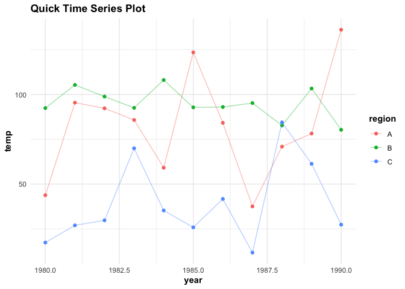
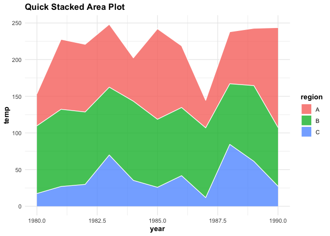

**NOTE: This small package is a Stat545b project, primarily for the purpose of learning function & package development.


The goal of timeseries is to speed up the initial stages of data exploration by providing a quick template for visualizing temporal patterns in data set.
Installation
devtools::install_github("nicolalove/timeseries", build_vignettes = TRUE, ref = "v0.2.0")Package Development
As per the specifications of the rubric for Exercise 1.1, I will now explain how I created each part of my R package using the devtools and usethis packages.
I initialized the package project by loading
library(devtools)in the RStudio console & used thecreate_packagefunction to create thetimeseriespackage.In a new script under the
timeseriespackage R-Project, I manually coded the functionqtseries, which I developed in assignment 1-b of this course. I used theuse_r()function to saveqtseriesas an .R file in the subdirectory of thetimeseriespackage, committed the changes and ran theload_all()function to make theqtseriesfunction available. Finally, I used the Check button under the Build tab to ensure that everything was running smoothly so far (I did this several times after each numbered step to ensure that the small changes hadn’t caused any errors).I then updated the description file with the relevant information, and specified a license using
use_mit_license()function. I made sure to update the description file with the dependencies I use in the function, examples and tests using theuse_package()anduse_pipe()functions.I used
roxygen2comment style and tags using@to specify the document theqtseriesfunction, mostly following along with the recorded first Stat545a lecture on R package development. I looked up some examples for writing functions usingggplot2as a dependency, and found that theggplot2developers recommend using the@importFromtag if the new function uses many lines of ggplot functions. This was especially helpful as using the::call for every line of ggplot functions was getting messy and madeqtseriesdifficult to read. Once I specified all the relevant documentation, I used thedocument()function to save theroxygen2inputs. After running anothercheck(), I installed thetimeseriespackage in my library & restarted my R session viainstall().I implemented some formal tests for the
qtseriesfunction by usinguse_testthat()to add thetestthatpackage to the Description file, and useduse_test("qtseries")to specifically write a test script forqtseriesfunction. These tests were developed in assignment 1-b of this course, so I just copied and pasted the tests in the test-qtseries.R script. I then checked the tests using thetest()function, as well as using the Check button under the Build tab to ensure everything was running smoothly. I also ran theload_all()function again after this step.I created a
ReadMe.Rmdfile using theuse_readme_rmd()function, and added a couple badges usinguse_lifecycle_badge("experimental")and manually writing the link for the MIT license badge. Once I am finished editing this Readme document I will render it using thebuild_readme()function.I built a vignette with
use_vignette(), added the relevant information and examples, and then rendered the document usingbuild_vignette().Steps 2-7 were taken for the
qstacktseriesfunction.
Basic Example
Building a time series plot with a dummy data set
testdf <- data.frame(year = rep(seq(from = 1980, to= 1990, 1), 3),
rainfall = c(rnorm(11, 100, 30), rnorm(11, 70, 10),rnorm(11, 20, 20)),
temp = c(rnorm(11, 70, 30), rnorm(11, 100, 10),rnorm(11, 45, 20)),
daysofsun = c(NA, NA, rnorm(9, 280, 50), rnorm(11, 300, 30), NA, rnorm(10, 340, 15)),
region = c(rep("A",11), rep("B", 11), rep("C", 11)))
library(timeseries)
qtseries(testdf, year, temp, region, verbose = TRUE)
#> Plotting time series...Done labelling plot!...Done applying default theme aesthetics!
qstacktseries(testdf,year, temp, region, verbose = TRUE)
#> Plotting time series...Done labelling plot!...Done applying default theme aesthetics!